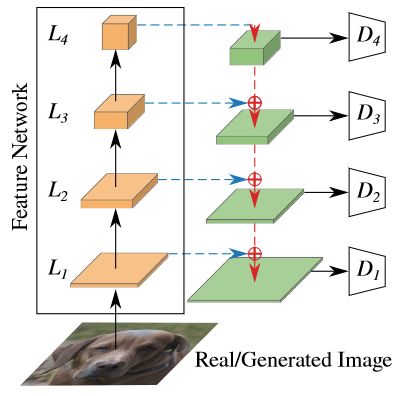

\(
\def\sc#1{\dosc#1\csod}
\def\dosc#1#2\csod{{\rm #1{\small #2}}}
\newcommand{\dee}{\mathrm{d}}
\newcommand{\Dee}{\mathrm{D}}
\newcommand{\In}{\mathrm{in}}
\newcommand{\Out}{\mathrm{out}}
\newcommand{\pdf}{\mathrm{pdf}}
\newcommand{\Cov}{\mathrm{Cov}}
\newcommand{\Var}{\mathrm{Var}}
\newcommand{\ve}[1]{\mathbf{#1}}
\newcommand{\mrm}[1]{\mathrm{#1}}
\newcommand{\etal}{{et~al.}}
\newcommand{\sphere}{\mathbb{S}^2}
\newcommand{\modeint}{\mathcal{M}}
\newcommand{\azimint}{\mathcal{N}}
\newcommand{\ra}{\rightarrow}
\newcommand{\mcal}[1]{\mathcal{#1}}
\newcommand{\X}{\mathcal{X}}
\newcommand{\Y}{\mathcal{Y}}
\newcommand{\Z}{\mathcal{Z}}
\newcommand{\x}{\mathbf{x}}
\newcommand{\y}{\mathbf{y}}
\newcommand{\z}{\mathbf{z}}
\newcommand{\tr}{\mathrm{tr}}
\newcommand{\sgn}{\mathrm{sgn}}
\newcommand{\diag}{\mathrm{diag}}
\newcommand{\Real}{\mathbb{R}}
\newcommand{\sseq}{\subseteq}
\newcommand{\ov}[1]{\overline{#1}}
\DeclareMathOperator*{\argmax}{arg\,max}
\DeclareMathOperator*{\argmin}{arg\,min}
\)
Projected GANs Converge Faster
- Axel Sauer, Kashyap Chitta, Jens Müller, and Andreas Geiger. Projected GANs Converge Faster. NeurIPS, 2021.
- Links:
[Project]
[GitHub]
[PDF]
1 Introduction
- What a GAN discriminator does is to project an input image into a low-dimensional representation. Then, it classifies whether this representation is realistic or not.
- Up to now, we train the discriminator from scratch. Is it necessary to do so?
- We learned from other tasks that pre-trained representations can be useful.
- Transfer learning is used widely in classification tasks.
- Perceptual losses [Johnson et al. 2016] have become common tools in conditional image generation.
- Can we levarge some pre-trained representations to make GAN training easier by?
- The paper says the answer is yes. Pre-trained representations can be used to make GAN training faster and more stable.
- However, naive application of the above idea is not good enough.
- STrong pre-trained representations enable the discriminator to dominate the two-player game, resulting in vanishing gradients for the generator.
- The paper proposes two methods to overcome the above problem.
- Feature pyramids use multiple discriminators to discriminate features at different scales.
- Random projections lead to better use of deeper layers for pre-trained networks.
2 Projected GANs
- A typical GAN is optimized to solve the following problem:
\begin{align*}
\min_G \max_D\ E_\ve{x \sim p_\ve{x}} [\log D(\ve{x})] + E_{\ve{z} \sim p_\ve{z}} [ \log (1 -D(G(\ve{z})))].
\end{align*}
- Let us introduce a set of projectors $\{P_l \}$, which images to the discriminator's input space. The optimization problem becomes:
\begin{align*}
\min_G \max_D\ \sum_{l} \bigg( E_\ve{x \sim p_\ve{x}} [\log D_l(P_l(\ve{x}))] + E_{\ve{z} \sim p_\ve{z}} [ \log (1 -D_l(P_l(G(\ve{z}))))] \bigg).
\end{align*}
where $\{D_l\}$ is a set of independent discriminators.
- The projectors $\{ P_l \}$ are kept fixed. We only optimize the parameters of $G$ and $\{ D_l \}$.
- Two criteria for the projectors.
- They should be differentiable.
- They should preserve important information about the image.
3 Network Design and Training Setup
- The paper experimented with multiple pre-trained networks.
- Given a pre-trained feature network $F$, the paper obtain feature tensors from four layers at resolutions $64 \times 64$, $32 \times 32$, $16 \times 16$ and $8 \times 8$.
- These resolutions are indexed as $l=1$, $l=2$, $l=3$, and $l=4$, respectively.
- The corresponding layers are called $L_1$, $L_2$, $L_3$ and $L_4$.
- The discriminators.
- Each discriminator $D_l$ uses a simple convolutional architecture with spectral normalization [Miyato et al. 2018] at each convolutional layer.
- Empirically, it is best for all discriminators to output logits at the $4 \times 4$ resolution.
- The logits are summed before being passed to the $\log$ function.
- In the generator pass, the losses from all discriminators are summed together.
- The authors observed that the discriminator could focus on a subset of the feature space while disregarding for other parts. This problem becomes more severe in deeper layers where the features are more semantic.
- They propose two strategies to dilute more prominent features to encourage the discriminator to use all information equally. These strategies use fixed random projections to mix features.
- Cross-Channel Mixing (CCM).
- The paper applies a once, randomly initialized $1 \times 1$ convolution to the features that are to be fed to the discriminator [He et al. 2015].
- The weights of this convolution layer is initialized with the He initialization.
- Cross-Scale Mising (CSM).
- The results of CCM are then subjected to random $3 \times 3$ convolutions (with padding of 1 to preserve spatial size).
- The weights of the convoultion layers are initialize with the He initialization.
- Features at lower resolution are then bilinearly upsampled and then added to features at the higher resolution, forming a U-Net-like chain.

- For the generator, the paper uses the FastGAN architecture [Liu et al. 2021].
- The GANs are trained with the hinge loss [Lim and Ye 2017] with batch size of 64 until 1 million images are shown to the discriminator.
- Data augmentation techniques were used, and the paper found that they consistently improved performance.
- The authors found that DiffAugment worked the FastGAN architecture.
4 Summary of Results
- When there are no random projections:
- Using $L_1$ and $L_2$ together are better than using $L_1$ alone.
- However, adding $L_3$ and $L_4$ degrades performance.
- Maybe more sematic features do not respond well to adversarial losses.
- Omitting shallow features also decreases performance.
- This is to be expected because these layers contain the most information about the original image.
- CCM moderately improves performance across all settings.
- Adding CSM improves performance in all settings. Moreover, settings that use more discriminators also perform better than those that use fewer discriminators.
- EfficientNets-Lite models, which are the smallest, yielded the best FID scores.
- Compact representation is faster and more beneficial to performance.
- The paper's technique improves FastGAN's training speed and final FID score significantly. However, less improvement can be observed for StyleGAN2.
- FastGAN with projection reaches StyleGAN2's FID score after 3 hours instead of 5 days.
- The paper claims that projected GANs outperforms state-of-the-art models by a large margin in terms of FID scores on a number of large datasets (FFHQ, LSUN-Bedroom, and CityScapes) and small datasets (WikiArt, Oxfor Flowers, Flickr landscape photographs, AnimalFace-Dog, and Pokemon).
- Artifacts.
- For the AFHQ (animal face) dataset, projected GAN sometimes produce animal heads floating on the background.
- This might be due to the fact that the feature networks were trained for classification, so they can ignore background if the foreground object is already depicted.
- For the FFHQ dataset, projected GAN sometimes produce poor-quality images.
Last modified: 2021/12/06
{kind=link}